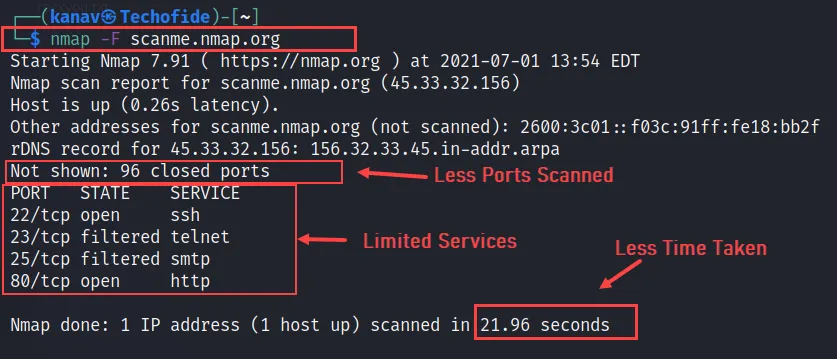
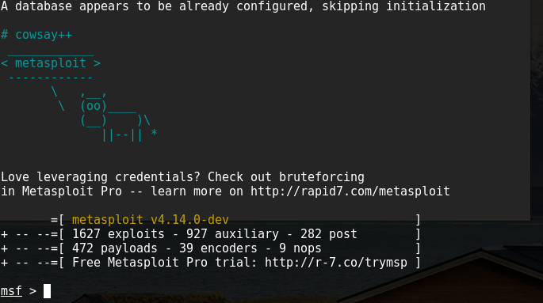

Ce projet avait pour objectif de nous initier aux bases de la cybersécurité, en combinant une approche théorique et pratique. Il s'inscrivait dans un projet nous permettant d'explorer des outils utilisés par les professionnels, tout en travaillant de manière autonome et collaborative.
Durant les séances, nous avons alterné entre des apports théoriques (culture générale, études de cas comme WannaCry ou EternalBlue) et des mises en pratique concrètes.
Nous avons manipulé plusieurs outils de sécurité :
Le projet faisait suite à des cours de cybersécurité et de cryptographie que nous avons suivis. Durant les heures dédiées au projet, nous devions lire des documents, rechercher des informations sur des sites internet officiels, puis répondre à différents quiz portant sur des thèmes variés à partir des informations trouvées.
Nous avons exploré l'utilisation de différents logiciels tels que Nmap pour scanner des réseaux, Legion pour scanner et exploiter les réseaux, Burpsuite pour maîtriser les sites web, et Metasploit qui permet de générer des virus informatiques.
Durant les séances, nous avons eu l'occasion d'élargir notre culture informatique en apprenant des dates importantes ou en étudiant des logiciels tels que WannaCry et EternalBlue.
Ce projet était réellement enrichissant. J'ai particulièrement apprécié la phase d'exploitation et d'analyse des vulnérabilités, qui nous plaçait dans une posture proche de cas réels.
J'ai été motivé au point de refaire certains exercices chez moi, en autonomie, en réutilisant des outils comme SQLMap et Nmap.
Les quiz ont également été une bonne manière de suivre notre progression tout en favorisant l'entraide dans le groupe. Cela m'a permis de consolider mes acquis et de mieux comprendre certaines notions.
Quelques images supplémentaires liées au projet.


